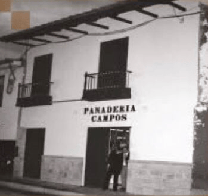
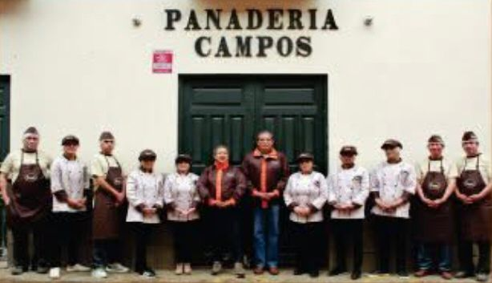

Historia
La Panadería Campos, fundada en 1923 en Cajamarca por Bacilio Campos Rojas, es mucho más que un negocio: es un emblema vivo de la tradición cajamarquina. Con más de un siglo de historia, ha sabido mantener intacta su esencia artesanal, preservando celosamente sus recetas originales que han pasado de generación en generación. Reconocida por sus inconfundibles rosquitas, bizcochuelos y panes tradicionales, cada producto refleja dedicación, experiencia y un profundo respeto por el oficio. Su único local, ubicado en el Jr. El Comercio 661, no solo es un punto de venta, sino un espacio cargado de historia y memoria colectiva, consolidándose como parte fundamental de la identidad gastronómica de Cajamarca.


Misión & Visión
Misión
Brindar a nuestros clientes productos de panadería y pastelería de la más alta calidad, elaborados con recetas tradicionales que preservan nuestra esencia artesanal, a precios accesibles y competitivos. Nos esforzamos por consolidarnos como la panadería número uno en Cajamarca, destacando por nuestro sabor, frescura y compromiso constante con la excelencia en cada producto.
Visión
Proyectarnos como una empresa líder a nivel nacional e internacional, llevando el sabor y la tradición cajamarquina más allá de nuestras fronteras. Aspiramos a expandir nuestra presencia en nuevos mercados, posicionando nuestros productos como referentes de calidad, tal como ya lo hemos demostrado al representar nuestra tradición panadera en escenarios internacionales como Alemania.